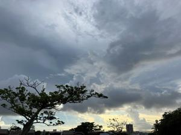

うるがいの話 ある日
最新: 電源コードがない【うるがいの話 ある日】とは 一日だけのプログです
『うるがいの話』の最新一日だけのプログで、通信料が少なく経済的だ。カニの画像をクリックすると全ての日付が載る『うるがいの話』サイトを表示します
|
|
【うるがいの話】 うるがい(ｳﾙｶﾞｲ urugai)とは、『もずくがに』の名前でとても大きくなります。 |
|---|---|
|
|
【カミマヤーの話】 猫のことを方言でマヤーといいます。カミマヤー（kamimayaa）とは、神の猫のことです。 |
|
【たながぁの音楽】 たながぁ（ﾀﾅｶﾞｰ tanagaa）とは手長えびのことで、何種類かあり大きいのは車 エビぐらいになります。 |

|
【ぶながぁの話】 ぶながぁ(ﾌﾞﾅｶﾞｰ bunagaa)とは、赤い髪の毛、赤い身体、そして身長は１ｍ２０ｃｍ ぐらい、川の蟹を食べているの目撃された。場所は沖縄県国頭郡大宜味村のと ある村僕の隣近所に住んでいる爺さんから、聞いた話です。 |
|
|
【ギーマの話】 ギーマ(giima)とは、山原の里山に咲くスズランに似た、 花を付けます。実は食べられます、 気が付くと口の周りが紫になっています。 |
2023年08月26日 (土）電源コードがない
16:42

中古品のプリンターが、届いたので早速使うことにした。ただ、電源コードが
ない。おえ、どうしようと、こわれてしまったプリンターの電源コードを利用
することにした。無事電源が、点いた。ところがである・・・・・・
TS8030 の梱包を取り外したところ
電源コードが無かったので、前機種のMG6930の
電源コードを利用しました。ところが、エラーコード5100
プリントヘッドホルダーを固定している輸送用テープやつまった用紙など、
プリントヘッドホルダーの動きを妨げているものがないか
プリントヘッドホルダーの動きを妨げているものがあれば、取り除いてくだ
さい。
がでて確認したとこと、プリンターの内部に電源コードが収められているのに
気づき取り外し、その電源コードを利用し再度利用しましたが、エラーコード
が、消えてくれません。
修理に出そうとしましたが、今年の３月で修理対応期間が終了してしまい断ら
れてしまいました。
こちらで、対象できることが有ればアドバイスをいただきたいです。
プリンターの中に電源コードを収めるなんて！、それなら説明を同封すべきだ
ろう。ちなみにアマゾンの評価では、最低だった。・・・、なんで調べなかっ
たんだろう、冴えない日々が続いている。一応、アマゾンの出品者へメッセー
ジを書き込む（期待していないけど）。
１６時３８分 ビットコインの総資産 ￥１１、０７８（↑１０）